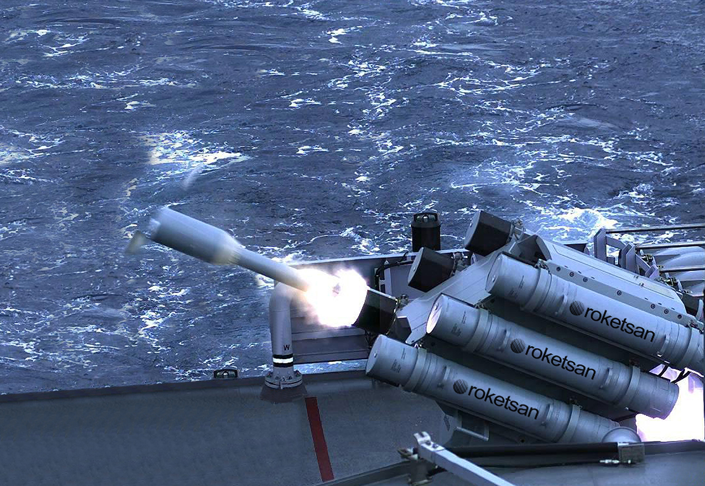
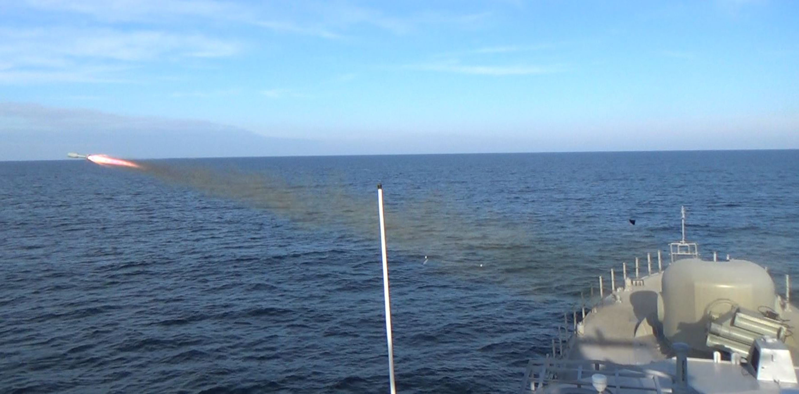
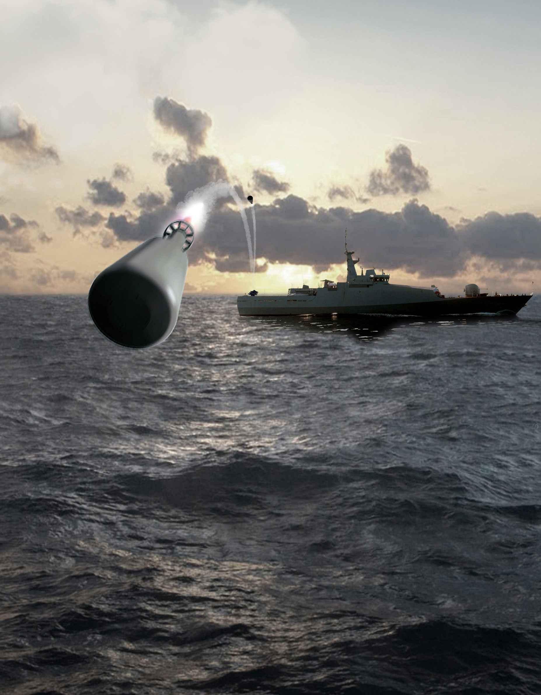

Denizaltı Savunma Harbi Roketi ve Atıcı Sistemi
DSH (Denizaltı Savunma Harbi) Roketi ve Atıcı Sistemi, su altı hedeflerine karşı kullanılmak üzere geliştirilen, kısa menzilli fakat çok hızlı reaksiyon sağlayan denizaltı savunma silah sistemidir.
Sistem; suüstü platformunun silah yönetim sistemi ve sonar altyapısı ile entegre çalışarak hedefe ait derinlik, konum ve atış çözümünü kullanır. Bu sayede tespit edilen denizaltı tehdidine karşı hızlı ve doğrudan reaksiyon üretir.
DSH çözümü klasik torpido taşıyıcı roket sistemlerinden farklı olarak, kısa-orta yakın taktik mesafede su altı hedeflerine karşı roket tabanlı, yüksek infilaklı, derinlik ayarlı bir vurucu etki oluşturur.
500–2.000 m
15–300 m
1.3 m
196 mm
35.5 kg
Tekli / Salvo
| Sistem Tipi | Denizaltı savunma harbi roketi ve atıcı sistemi |
| Adı | DSH |
| Görev Alanı | Su altı hedeflerine karşı yakın menzilli denizaltı savunma harbi |
| Menzil | 500–2.000 m |
| Derinlik Aralığı | 15–300 m |
| Uzunluk | 1.3 m |
| Çap | 196 mm |
| Roket Ağırlığı | 35.5 kg |
| Harp Başlığı | Yüksek infilaklı, su altı şok etkisi için optimize edilmiş |
| Mühimmat Emniyeti | Duyarsız mühimmat özelliği |
| Tapa Özelliği | Hedef derinliğine göre otomatik ayarlanabilir tapa |
| Atış Çözümü | Fire Control System tarafından seyir ve hedef bilgisi kullanılarak hesaplanır |
| Atış Modu | Tekli atış veya salvo atış |
| Lançer Yönlendirme | Otomatik ve manuel lançer yönlendirme |
| Stabilizasyon | Atıcı sistemde stabilizasyon kabiliyeti |
| Platform Entegrasyonu | Suüstü platformunun silah yönetim sistemi ve sonarı ile entegre çalışma |
| Öne Çıkan Özellik | Kısa reaksiyon süresiyle su altı hedeflerine karşı yakın menzilde etkili, yerli ASW roket çözümü |
| Sonar Entegrasyonu | Geminin sonarından gelen hedef bilgisiyle birlikte çalışır |
| Silah Yönetim Sistemi Uyumu | Platformun weapon management system yapısına entegre çalışır |
| Hızlı Reaksiyon | Tespit edilen su altı hedefine karşı kısa sürede ateşleme |
| Derinlik Bazlı Angajman | Hedef derinliğine göre tapa ayarı yapabilme |
| Salvo Atış | Birden fazla roketle ardışık/yoğun angajman |
| Yakın Savunma | Platforma yaklaşan denizaltı tehdidine karşı yakın menzilli çözüm |
| Caydırıcılık | Yakın çevrede tespit edilen denizaltılara karşı hızlı vurucu etki |
| 1. Tespit | Suüstü platformunun sonarı hedefi tespit eder |
| 2. Çözümleme | Hedef konumu, seyir bilgisi ve derinlik verisi silah yönetim sistemine aktarılır |
| 3. Atış Hesabı | Fire Control System gerekli atış esaslarını hesaplar |
| 4. Lançer Yönlendirme | Lançer otomatik veya manuel olarak hedefe yönlendirilir ve stabilize edilir |
| 5. Ateşleme | DSH roketi tekli veya salvo olarak fırlatılır |
| 6. Etki | Derinlik ayarlı tapa ile hedef bölgesinde su altı şok etkisi oluşturulur |
| Denizaltılar | Yakın taktik mesafedeki su altı hedefleri |
| Sualtı Tehditleri | Platforma yaklaşan veya tespit edilen düşman sualtı unsurları |
| ASW Görevleri | Karakol botu ve benzeri suüstü platformların savunma/angajman hedefleri |
| Ana Platform | Suüstü platformları |
| Geliştirme Amacı | Yeni tip karakol botlarında su altı hedeflerine angajman |
| Kullanım Konsepti | Yakın menzilli, hızlı reaksiyonlu ASW silahı |
| Sistem Mimarisi | Roket, atıcı sistem, sonar entegrasyonu ve atış kontrol altyapısından oluşur |
| Ailedeki Yeri | Torpidodan farklı olarak kısa menzilli ve hızlı suüstü platform ASW çözümü |


